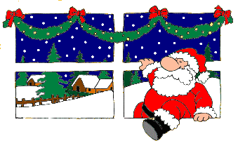

Mikołajki – tradycyjna, polska nazwa święta ku czci świętego Mikołaja, biskupa Miry, obchodzonego 6 grudnia w katolicyzmie i prawosławiu. Do XIX wieku był to na ziemiach polskich dzień wolny od pracy. W 1969 roku w Kościele katolickim zniesiono święto, jest to już tylko tzw. wspomnienie dowolne.
Od średniowiecza w wigilię tego dnia święty Mikołaj (a właściwie osoba przebrana za niego) przynosił dzieciom prezenty. Współcześnie w Polsce nocą podkłada się dzieciom drobne upominki, małe zabawki a przede wszystkim słodycze. W XIX i XX wieku obdarzający dzieci podarkami w swoje święto Mikołaj został przekształcony w baśniową postać rozdającą prezenty w Boże Narodzenie, wykorzystywaną w kulturze masowej.
Od IX wieku Mikołaj był wielbiony w chrześcijaństwie wschodnim i zachodnim jako święty i cudotwórca. Spisany w Bizancjum Żywot Mikołaja pióra archimandryty Michała z IX wieku przekazuje, że już w tym czasie 6 grudnia obchodzono w Konstantynopolu święto Mikołaja, które traktowano jako godne przygotowanie do Bożego Narodzenia. Liczne, poświadczone przez Kościół cuda sprawiły, że na Zachodzie jego wspomnieniu nadano również rangę święta. Najstarszy o tym przekaz pochodzi z akt synodów w Neapolu z lat 821 i 842. Na synodzie w Oksfordzie z 1222 roku podniesiono rangę tego święta w kalendarzu do najwyższej.
Już w X wieku w Mikołajki wystawiano dramaty liturgiczne dla dzieci, opowiadające historię świętego, które w późnym średniowieczu staną się niezwykle popularne w całej Europie. Część badaczy sądzi, że zwyczaj wręczania prezentów związany był początkowo z tymi przedstawieniami. Inni wskazują na XII-wieczne przekazy ze środkowej Francji, które informują, że w wigilię święta Mikołaja zakonnice roznosiły prezenty dla dzieci z biednych rodzin i zostawiały je wieczorem pod drzwiami. W paczkach znajdowały się pomarańcze i orzechy.
Kult świętego był tak popularny, że od XVI wieku w kalendarzach protestanckich zachowano przy 6 grudnia zapis o wspominaniu tego dnia Mikołaja. Nazwę święto zastąpiono w nich Dniem Mikołaja. W XVII-wiecznych niemieckich pismach protestanckich wyrażano zaniepokojenie zwyczajem wręczania dzieciom prezentów przez świętego biskupa. Niektórzy duchowni luterańscy uważali to za przejaw odrzucanego przez protestantów kultu świętych i proponowali, aby upominki przynosiło Dzieciątko Jezus w Boże Narodzenie. To najstarszy ślad próby przeniesienia zwyczaju wręczania dzieciom prezentów z wigilii 6 grudnia na wigilię Bożego Narodzenia.

Sobór Watykański II zarządził rewizję kultu świętych w Kościele katolickim. Powołano komisję złożoną z teologów i historyków, która miała zaproponować usunięcie świąt tych postaci, których istnienia nie sposób było udowodnić. Zakwestionowała ona historyczność Mikołaja, co wywołało ożywioną dyskusję, w której znaczna część hierarchii i wiernych stanęła w obronie kultu świętego. Papież Paweł VI zdecydował się na rozwiązanie kompromisowe. W opublikowanym w 1969 roku Calendarium Romanum zniósł święto 6 grudnia i postanowił, że tego dnia będzie obchodzone tzw. wspomnienie dowolne. Z kalendarza usunięto również średniowieczne teksty hagiograficzne poświęcone Mikołajowi, pozostawiając krótką notatkę opartą na Stratelatis z VI wieku. W motu prioprio Mysterii Paschalis Paweł VI uzasadnił: aby wprowadzić w życie postanowienia Soboru Powszechnego, usunięto z kalendarza ogólnego imiona niektórych świętych; zezwolono, aby wspomnienia pewnych świętych obchodzono według uznania i aby przywrócono ich kult, ograniczony do ich własnych krajów.